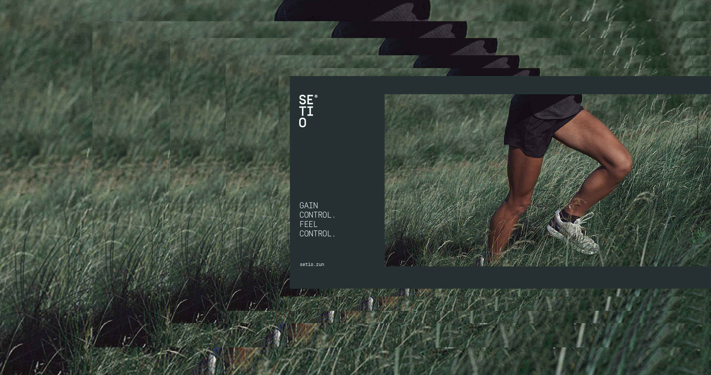
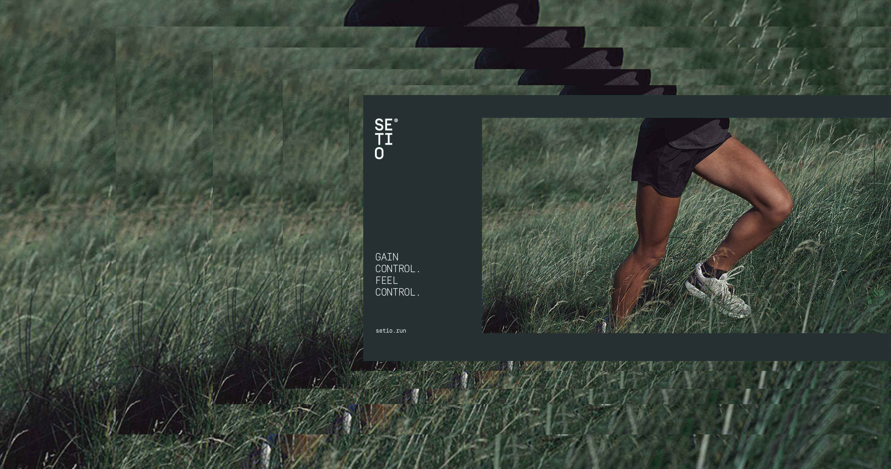

Setio®
Brand Identity
We believe runners in control of mind and feet are successful runners. Empowering runners with tailor made advices and precision metrics is at the heart of what we do. Bridging data, expert knowledge, technology and connecting runners to a global network of dedicated professionals will make runners become runners in control. Gain Control. Feel control.
This is the rundown of all the elements that make up the Setio® brand. It's our promise, purpose, personality, product, the way we talk, what we look like, and what we are striving to accomplish. Read, review, absorb, and enjoy. Then stick to these basic guides when working on the Setio® Brand.
The Setio® brandsignature is our key element, it's based on a tight typograpic system. The signature can be used dynamicly depending on the need. Treat it with care and respect the simple guidelines stated below for optimal usage.
The color scheme is one of the main ingredients for a sucessful brand. The colors should be used with care and never use too many colors at the same time. The primary colorpalette is what make up the core brand. The secondary serves as UI signal colors.
The Simplon Collection is declined in 2 sub-families: Simplon Norm and Simplon Mono. Unlike Simplon Norm, Simplon Mono is monospaced, meaning that every single character included in it share the same spacing box accross all weights and styles. Combining the proportional and monospaced versions of Simplon allows a wide variety of design solutions.
The super graphic element is based on the idea of stepping into a zone. A zone of control. On the way to control there are multiple steps, each represented by an outlined square. The super graphic element is dynamic, animatable and comes in multiple formats. It can be used as a graphic element acrosss all touch points from digital to packaging.
 

The iconography style is based on a tight grid to make sure all icons fit togehter. The style is simple and functional and shoud be used to communicate details in the app, website or on packing. Iconography can be used to explain product specs and features.
The photography style of both still and video is what makes up our visual assets, it’s important to use the right photography for the right context. Therefore we have 2 photohraphy styles that are tailored for specifc contexts.
Progressive environments (nature, woods, beack, mountains and urban places) Works as brand attitude photography and motivates people to get out and run.
Controlled environments (studio, warehouse, track, table setting) Gives the product focus but seen in the context of a human wearing or interacting with the product.

The following app screens are excecutions that showcase ways of intergrating the new Setio® brand into the current structure of the iOS app.
The following examples can be used as inspiration for how to apply the Setio® brand identity to touchpoints such as website, clothing, packaging and printed collatoral. These serves as examples.